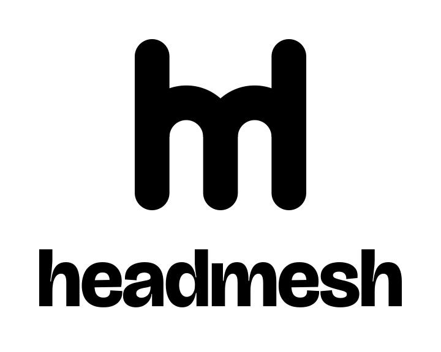
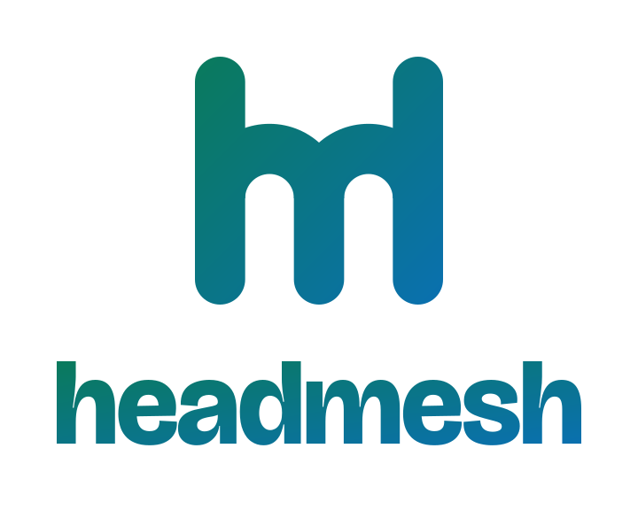
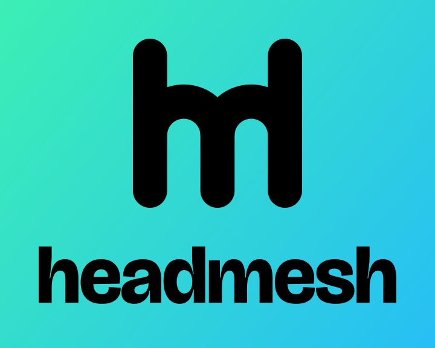

Headmesh · logo system
The selected D4 shared-leg geometry and outlined Bricolage wordmark. Four layouts, ten colour/background combinations, each in SVG and PNG.
Checkerboards indicate transparency. Gradient artwork uses a deeper green/blue palette on white; the bright mint/cyan palette is used on black. Usage notes · Brand kit
40 variants


Standalone mark · Black logo · transparent


Standalone mark · White logo · transparent


Standalone mark · Shared-leg accent · for dark surfaces


Standalone mark · Shared-leg accent · for light surfaces


Standalone mark · White logo · black background


Standalone mark · Black logo · white background


Standalone mark · Gradient logo · black background


Standalone mark · Gradient logo · white background


Standalone mark · Black logo · gradient background


Wordmark · Gradient logo · transparent


Wordmark · Black logo · transparent


Wordmark · White logo · transparent


Wordmark · Shared-leg accent · for dark surfaces


Wordmark · Shared-leg accent · for light surfaces


Wordmark · White logo · black background


Wordmark · Black logo · white background


Wordmark · Gradient logo · black background


Wordmark · Gradient logo · white background


Wordmark · Black logo · gradient background


Horizontal lockup · Gradient logo · transparent


Horizontal lockup · Black logo · transparent


Horizontal lockup · White logo · transparent


Horizontal lockup · Shared-leg accent · for dark surfaces


Horizontal lockup · Shared-leg accent · for light surfaces


Horizontal lockup · White logo · black background


Horizontal lockup · Black logo · white background


Horizontal lockup · Gradient logo · black background


Horizontal lockup · Gradient logo · white background


Horizontal lockup · Black logo · gradient background


Vertical / stacked lockup · Gradient logo · transparent


Vertical / stacked lockup · Black logo · transparent


Vertical / stacked lockup · White logo · transparent


Vertical / stacked lockup · Shared-leg accent · for dark surfaces


Vertical / stacked lockup · Shared-leg accent · for light surfaces


Vertical / stacked lockup · White logo · black background


Vertical / stacked lockup · Black logo · white background



Vertical / stacked lockup · Gradient logo · black background


Vertical / stacked lockup · Gradient logo · white background



Vertical / stacked lockup · Black logo · gradient background
